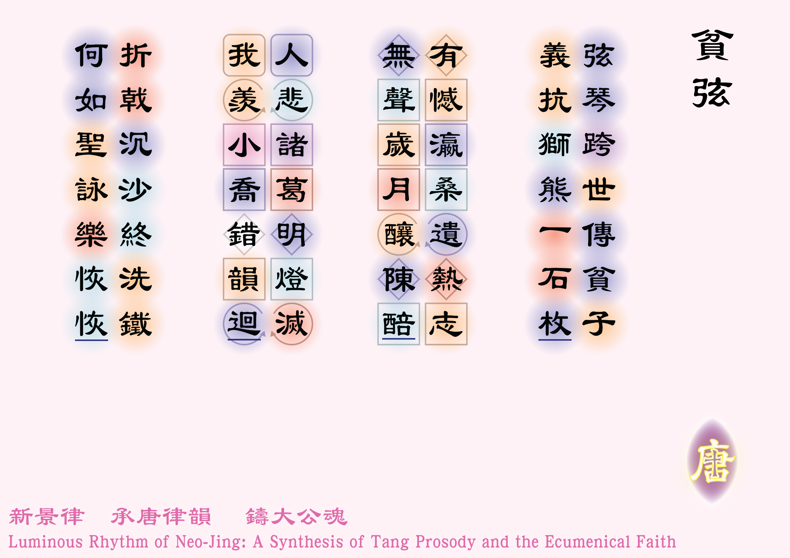

![[如果未顯示圖片，請確認 圖例_2-01.jpg 已放入同資料夾]](圖例_2-01.png)

弦琴跨世傳貧子 [1]* 達味擅長彈琴，更曾為撒烏耳彈琴驅魔。見〈撒慕爾紀上：16:14-23〉。
** 黃家駒（1962-1993）生於香港深水埗的一個基層家庭。
，義抗獅熊一石枚 [2]達味向撒烏耳自薦去挑戰巨人哥肋雅時，曾以在牧羊時與獅子和狗熊對抗，證明自己的勇猛。把獅熊解為巨人哥肋雅也無不可。見〈撒慕耳紀上：17:34-51〉。。
有憾瀛桑遺熱志 [3]瀛桑：東瀛和扶桑，日本的代稱。黃家駒於1993年6月意外死於日本。，無聲歲月釀陳醅 [4]* 無聲歲月：可解作《歲月無聲》的倒裝，為黃家駒於1989年創作的歌曲。
** 陳醅：陳年而未過濾的酒；醅，粵音配恢切。。
人悲諸葛明燈滅 [5]* 諸葛：三國時代蜀漢丞相諸葛亮（公元181-234），筆者曾以杜甫《蜀相》一詩中的「出師未捷身先死，長使英雄淚滿襟」來紀念黃家駒；
** 明燈滅：諸葛亮第五次北伐魏國時（公元234年），病死於前線，在小說《三國演義》中，他曾在臨死前施法續命，但續命燈遭部將魏延不慎踢熄；，我羨小喬錯韻迴 [6]* 小喬：三國時代吳國將領周瑜之妻。周瑜精於音律，能聽出奏曲者的錯誤，《三國志》中有「曲有誤，周郎顧」之說，而唐李端《聽箏》一詩中有一句「欲得周郎顧，時時誤拂弦」，寫妻子刻意把曲彈錯來逗弄丈夫。
** 此句後來發現犯了孤平之誤，但因其關於「錯韻」，故刻意保留。！
折戟沉沙終洗鐵 [7]* 典出唐杜牧《赤壁》一詩，詩曰：
「折戟沉沙鐵未消，自將磨洗認前朝。
東風不與周郎便，銅雀春深鎖二喬。」
大意是詩人在河床上找到了赤壁之戰時的武器，感慨若然當年東風不吹，曹操就會消滅東吳，擄走美人大小二喬。，何如聖詠樂恢恢 [8]恢恢：寬大、廣闊的意思。
？
體裁：七言律詩（平起首句不入韻）
韻部：平水韻．十灰
創作日期：二零二六年四月十日